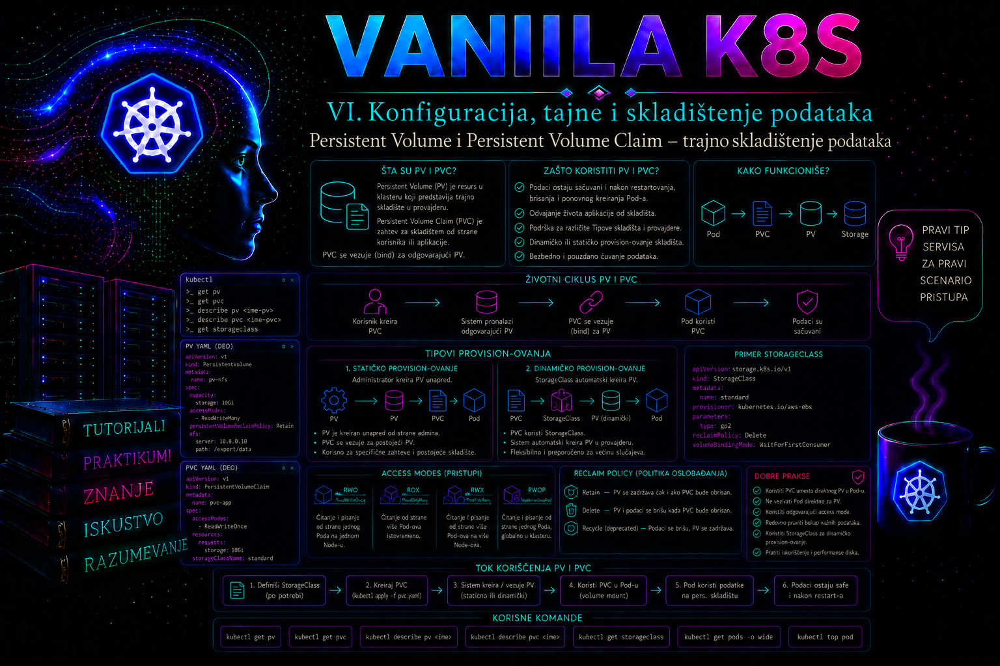

Vanilla Kubernetes

Kontejner je potrošna izvršna jedinica: može biti restartovan, zamenjen novom instancom ili pokrenut na drugom worker čvoru. Pod takođe nije trajni nosilac identiteta. Kada Deployment zameni Pod, novi Pod dobija novi UID, a lokalni sloj kontejnerskog fajl-sistema ne predstavlja pouzdano mesto za poslovne podatke. Kubernetes zato razdvaja životni ciklus aplikacije od životnog ciklusa skladišta pomoću objekata PersistentVolume i PersistentVolumeClaim.
PersistentVolume, skraćeno PV, predstavlja skladišni resurs dostupan klasteru. Može opisivati NFS eksport, blok uređaj, LUN, cloud disk ili skladište koje obezbeđuje CSI drajver. PersistentVolumeClaim, skraćeno PVC, predstavlja zahtev aplikacije za kapacitetom i određenim karakteristikama skladišta. Pod ne mora da zna adresu storage sistema, naziv LUN-a ili parametre cloud provajdera; on koristi PVC, dok administratorski i infrastrukturni sloj rešavaju kako će zahtev biti realizovan.
Zašto su PersistentVolume i PersistentVolumeClaim odvojeni objekti
Razdvajanje PV-a i PVC-a nije samo pogodnost u YAML konfiguraciji. Ono predstavlja granicu odgovornosti. Administrator platforme definiše koje vrste skladišta postoje, kako se kreiraju, kakvu pouzdanost nude, gde fizički postoje i šta se dešava nakon prestanka korišćenja. Vlasnik aplikacije navodi koliko prostora zahteva i na koji način aplikacija mora da mu pristupa. Time aplikacioni manifest ostaje manje zavisan od konkretnog proizvođača skladišta.
PV je resurs na nivou klastera i ne pripada namespace-u. PVC je namespaced objekat i aplikacija mu pristupa iz istog namespace-a. Pod može da koristi samo PVC koji se nalazi u njegovom namespace-u. Ovakav model omogućava da više timova koriste zajedničku storage infrastrukturu bez neposrednog upravljanja njenim uređajima, administratorskim nalozima ili mrežnim parametrima.
PersistentVolume ima životni ciklus nezavisan od pojedinačnog Poda. Brisanje ili ponovno kreiranje Poda ne briše automatski PVC niti podatke na pripadajućem skladištu. Međutim, trajnost podataka ne znači da su oni automatski zaštićeni od brisanja PVC-a, greške aplikacije, kvara storage sistema ili pogrešno postavljene reclaim politike. Kubernetes povezuje aplikaciju sa skladištem, ali ne zamenjuje projektovanje dostupnosti, backup, zaštitu od korupcije i disaster recovery.
Statičko i dinamičko obezbeđivanje skladišta
Kod statičkog provisioning-a administrator najpre priprema skladište izvan Kubernetes API-ja, a zatim ručno kreira PV koji ga opisuje. PVC se vezuje za odgovarajući raspoloživi PV. Ovaj model je koristan kada organizacija koristi unapred dodeljene NFS eksport direktorijume, postojeće SAN LUN-ove, strogo kontrolisane storage zone ili resurse koje infrastrukturni tim izdaje kroz zaseban proces promene.
Statički model pruža neposrednu kontrolu, ali zahteva evidenciju kapaciteta, ručno usklađivanje, sanitizaciju oslobođenih volumena i koordinaciju između timova. Greška u adresi servera, putanji, tipu fajl-sistema ili topologiji može dovesti do toga da PVC ostane u stanju Pending ili da Pod ne uspe da montira volumen.
Kod dinamičkog provisioning-a PVC pokreće automatsko kreiranje skladišnog resursa. Objekat StorageClass definiše provisioner, parametre, reclaim politiku, režim vezivanja, mogućnost proširenja i, kada je potrebno, dozvoljene topologije. Savremene produkcione implementacije najčešće koriste CSI drajver koji je podržan od proizvođača storage platforme ili cloud provajdera.
Dinamičko kreiranje smanjuje ručni rad, ali ne uklanja administratorsku odgovornost. StorageClass mora biti projektovan prema poslovnoj nameni. Podrazumevana klasa ne sme slučajno da kreira preskupo, nedovoljno otporno ili geografski neprikladno skladište. Parametri StorageClass objekta zavise od CSI drajvera i ne treba ih prepisivati između platformi bez provere zvanične dokumentacije proizvođača.
CSI arhitektura i tok dinamičkog provisioning-a
Container Storage Interface (CSI) je standardizovan interfejs između orkestratora i storage drajvera. Kubernetes ne implementira protokol konkretnog SAN, NAS ili cloud sistema, već preko CSI poziva traži kreiranje, objavljivanje, montiranje, proširenje, snimanje ili uklanjanje volumena. Savremene integracije treba da koriste spoljašnji CSI drajver podržan za konkretnu verziju Kubernetes-a i backend platforme; istorijski in-tree volume plug-in moduli su uklonjeni ili migrirani ka CSI modelu i nisu osnova za novo projektovanje.
CSI instalacija tipično ima controller deo, raspoređen kao Deployment ili StatefulSet, i node deo, najčešće kao DaemonSet na odgovarajućim čvorovima. Controller servis komunicira sa storage API-jem i obavlja operacije kao što su CreateVolume, DeleteVolume, attach/detach i controller-side proširenje. Node servis na konkretnom worker čvoru izvršava stage/unstage i publish/unpublish operacije, odnosno priprema uređaj i izlaže ga kubelet-u za Pod. Tačan skup operacija zavisi od sposobnosti koje drajver oglašava.
| Komponenta | Uloga | Tipičan dokaz ili kvar |
|---|---|---|
| CSI driver controller | Implementira controller RPC pozive ka backend-u; obično radi uz standardne sidecar kontejnere. | Greške autentikacije, kapaciteta, topologije ili backend API-ja; log drajvera sadrži odgovarajući CSI poziv i status. |
external-provisioner |
Prati PVC objekte i za odgovarajući provisioner poziva CreateVolume; zatim kreira PV. |
PVC ostaje Pending, a događaji i log pokazuju neuspešno provisioning ponavljanje. |
external-attacher |
Prati VolumeAttachment i koordinira controller publish/unpublish kada drajver zahteva attach. |
FailedAttachVolume, zastareo VolumeAttachment, limit uređaja ili disk vezan za drugi čvor. |
external-resizer |
Prati zahtev za većim PVC kapacitetom i pokreće controller-side proširenje. | PVC condition ukazuje na resize koji čeka ili se ponavlja; backend ne podržava zahtevanu veličinu. |
external-snapshotter i snapshot controller |
Koordiniraju CSI snapshot pozive i vezu VolumeSnapshot–VolumeSnapshotContent; CRD objekti i snapshot controller nisu deo osnovnog CSI drajvera u svakoj distribuciji. |
Snapshot nije readyToUse, nedostaje odgovarajuća klasa, CRD ili podrška drajvera. |
node-driver-registrar i CSI node driver |
Registruju drajver kod kubelet-a i izvršavaju node-side pripremu i mount. | FailedMount, nema registracionog socket-a, nedostaje alat ili uređaj na čvoru. |
CSIDriver, CSINode i CSIStorageCapacity |
Objavljuju identitet, mogućnosti, raspoloživost drajvera po čvorovima i, kada se koristi, topološki kapacitet za scheduling. | Drajver nije oglašen na ciljnom čvoru, pogrešna topologija ili scheduler nema podatak potreban za izbor. |
Redosled dinamičkog toka je važan za dijagnostiku. PVC bira StorageClass; external-provisioner poziva drajver; backend kreira volumen; provisioner kreira PV i binder uspostavlja vezu. Kada Pod bude raspoređen, attach/detach controller po potrebi kreira VolumeAttachment, CSI controller vezuje uređaj za čvor, a kubelet preko node drajvera priprema i montira volumen. Zato Bound potvrđuje uspešno obezbeđivanje i vezivanje, ali ne dokazuje uspešan attach, mount niti aplikacioni I/O.
CSI sidecar kontejneri imaju sopstvene matrice kompatibilnosti sa Kubernetes i CSI verzijama. Njihove image tagove ne treba nasumično nadograđivati nezavisno od drajvera. Podržanu kombinaciju, RBAC, socket putanju, liveness proveru, leader election, topologiju i način nadogradnje određuje manifest ili operator proizvođača. Pre promene čuvaju se trenutne verzije i proverava rollback procedura; rolling update node plug-in-a mora uzeti u obzir aktivne mount operacije i PodDisruptionBudget controller dela.
Životni ciklus PV i PVC objekata
Statički kreiran PV najčešće prvo dobija fazu Available. Kada Kubernetes pronađe PVC čiji zahtevi odgovaraju PV-u, uspostavlja se vezivanje, a oba objekta prelaze u stanje Bound. Veza je ekskluzivna na nivou PV–PVC para: jedan PV se u datom trenutku vezuje za jedan PVC. Više Podova može koristiti isti PVC samo kada storage sistem, drajver, pristupni režim i obrazac aplikacije to dozvoljavaju.
Kubernetes pri izboru proverava zahtevani kapacitet, access mode, StorageClass, volumeMode, selektor i druge uslove. PV može imati veći kapacitet od zahtevanog, ali Kubernetes ne deli jedan PV na više manjih PVC zahteva. PVC koji zahteva 20 Gi može biti vezan za raspoloživi PV od 50 Gi, nakon čega preostalih 30 Gi nije zaseban raspoloživ resurs.
Vezivanje nije zasnovano na „najbližem nazivu”, već na kompatibilnosti i odluci kontrolera. Administrator može unapred rezervisati PV pomoću spec.claimRef, dok vlasnik PVC-a može zahtevati konkretan PV poljem spec.volumeName. Obe strane i dalje moraju biti kompatibilne po klasi, access mode-u, volumeMode i kapacitetu. PVC selector dodatno filtrira statičke PV objekte po labelama, ali PVC sa ne-praznim selektorom ne može pokrenuti dinamički provisioning. Pre-binding je moćna administratorska intervencija i ne treba ga koristiti za zaobilaženje topologije ili prava vlasništva.
Kada odgovarajući PV ne postoji, statički PVC ostaje Pending. Kod dinamičkog provisioning-a odgovarajući provisioner pokušava da kreira volumen. Stanje Pending zato nije dijagnoza već simptom. Administrator mora pregledati događaje PVC-a, StorageClass, stanje provisioner kontrolera, kvote, kapacitet backend sistema i eventualna topološka ograničenja.
Nakon brisanja PVC-a ponašanje zavisi od reclaim politike. Kod politike Retain PV prelazi u fazu Released, ali se ne smatra automatski spremnim za novog korisnika. Podaci ostaju na storage sistemu i administrator mora odlučiti da li ih arhivira, oporavlja ili bezbedno uklanja. Kod politike Delete očekuje se da se uklone Kubernetes PV objekat i pripadajući dinamički kreiran storage resurs. Stvarno ponašanje mora biti provereno za konkretan CSI drajver.
Stara politika Recycle nije preporučeni savremeni model i ne treba je koristiti kao osnovu novih rešenja. Za ponovno korišćenje statičkih volumena primenjuje se kontrolisan postupak sa politikom Retain, proverom vlasništva, sanitizacijom podataka i kreiranjem odgovarajućeg novog PV objekta.
Kapacitet, pristupni režimi i volumeMode
Polje resources.requests.storage u PVC-u definiše minimalni zahtevani kapacitet. Ono nije isto što i kvota koju aplikacija nužno može precizno da koristi. Način sprovođenja ograničenja zavisi od vrste skladišta, fajl-sistema, CSI drajvera i backend platforme. Administrator mora razlikovati deklarisani Kubernetes kapacitet, stvarni kapacitet uređaja i potrošnju vidljivu iz aplikacije.
| Access mode | Značenje | Tipična primena |
|---|---|---|
ReadWriteOnce – RWO |
Volumen može biti montiran za čitanje i pisanje sa jednog čvora. Više Podova na istom čvoru može ga koristiti ako drajver to podržava. | Blok storage za bazu podataka ili stateful aplikaciju sa jednom aktivnom instancom. |
ReadOnlyMany – ROX |
Više čvorova može montirati volumen samo za čitanje. | Zajednički statički sadržaj, modeli ili referentni podaci. |
ReadWriteMany – RWX |
Više čvorova može montirati volumen za čitanje i pisanje. | NFS ili distribuirani fajl-sistem za zajedničke dokumente i sadržaj. |
ReadWriteOncePod – RWOP |
Volumen može biti montiran za pisanje samo u jednom Podu u celom klasteru, uz odgovarajuću CSI podršku. | Radno opterećenje kod kojeg je važno strogo sprečiti istovremeno pisanje iz dve instance. |
Access mode ne predstavlja automatsku aplikacionu bravu niti garantuje bezbednu paralelnu obradu. RWX dozvoljava višestruko montiranje, ali aplikacije i dalje moraju pravilno rešavati zaključavanje fajlova, konkurentne izmene i konzistentnost. RWO takođe nije sinonim za „jedan Pod”; ograničenje se odnosi na čvor, osim kada se koristi RWOP sa podržanim CSI drajverom.
volumeMode: Filesystem predstavlja podrazumevani način rada. Uređaj je formatiran odgovarajućim fajl-sistemom i montiran u direktorijum kontejnera. volumeMode: Block aplikaciji izlaže sirovi blok uređaj. Raw block zahteva eksplicitnu podršku aplikacije i povećava rizik, jer Kubernetes ne kreira fajl-sistem i ne štiti administratora od pogrešnog pisanja na uređaj.
StorageClass, binding i proširenje volumena
PVC sa navedenim storageClassName traži skladište iz konkretne klase. PVC bez tog polja može koristiti podrazumevanu StorageClass ako je ona definisana. Vrednost storageClassName: "" eksplicitno znači da PVC ne traži klasu za dinamičko provisioning rešenje. Ova razlika je važna kod statičkih volumena, jer izostavljeno polje i prazan string ne moraju imati isto ponašanje u klasteru sa podrazumevanom klasom.
StorageClass može koristiti volumeBindingMode: Immediate, pri čemu se volumen kreira ili vezuje čim nastane PVC. Za topološki ograničene diskove često je bezbedniji WaitForFirstConsumer. Tada se odluka odlaže dok scheduler ne razmotri Pod, njegove node selektore, affinity pravila, taint toleracije i dostupne zone. Time se izbegava kreiranje diska u zoni u kojoj Pod ne može biti raspoređen.
Kod WaitForFirstConsumer PVC koji čeka prvi Pod može opravdano ostati Pending; to samo po sebi nije incident. Pod ne treba forsirati poljem spec.nodeName, jer se time zaobilazi scheduler i PVC može ostati bez provisioning odluke. Za laboratorijsko usmeravanje koristi se nodeSelector ili affinity. Polje allowedTopologies u StorageClass-u dodatno ograničava gde volume sme da postoji, ali se uvodi samo kada je zahtev arhitekture jasan.
U klasteru može postojati najviše jedna operativno podrazumevana StorageClass, označena anotacijom storageclass.kubernetes.io/is-default-class: "true". Ako ih administrativnom greškom ima više, Kubernetes bira najnoviju pri dinamičkom provisioning-u PVC-a bez storageClassName. PVC bez tog polja može naknadno dobiti novu podrazumevanu klasu kada je administrator uvede; PVC koji eksplicitno ima storageClassName: "" ostaje bez klase. Zbog toga je prazan string važan ugovor za statičko vezivanje, a promena default klase mora biti kontrolisana platformska promena.
Proširenje PVC-a moguće je samo kada StorageClass dozvoljava allowVolumeExpansion i kada CSI drajver, backend i fajl-sistem podržavaju proširenje. Volumen se može povećati, ali ne i smanjiti standardnim Kubernetes postupkom. Pre izmene administrator proverava slobodan kapacitet backend sistema, podržane granice, backup, stanje aplikacije i dokumentaciju drajvera. Nakon izmene proveravaju se PVC conditions, događaji, kapacitet PV-a i veličina fajl-sistema unutar Poda.
Ne menja se direktno spec.capacity PV-a kao zamena za povećanje PVC-a: time kontroler može zaključiti da je željeno stanje već ostvareno i preskočiti stvarni resize backend-a. Ako je zahtevana veličina izvan mogućnosti drajvera i proširenje se beskonačno ponavlja, podržani recovery zavisi od verzije klastera. Savremeni klaster može automatski oporaviti resize ka manjoj, ali i dalje većoj vrednosti od trenutnog kapaciteta, kada je ta mogućnost podržana; stariji kontrolisani postupak sa Retain, brisanjem i ponovnim vezivanjem PVC-a nosi znatno veći rizik i zahteva zvaničnu proceduru, backup i odobrenu promenu.
Snapshot, kloniranje i promenljivi storage atributi
CSI može omogućiti kreiranje novog PVC-a iz postojećeg PVC-a ili VolumeSnapshot objekta. Kloniranje je CSI mogućnost dinamičkog provisioner-a i izvorni PVC mora biti Bound; tradicionalno su izvor i odredište u istom namespace-u, a podrška za cross-namespace data source zahteva odgovarajuću verziju, feature gate, dataSourceRef, ReferenceGrant i podršku populatera. Ove mogućnosti ne treba pretpostaviti samo zato što je drajver CSI: proveravaju se capability, verzija sidecar-a i dokumentacija proizvođača.
Volume Snapshot API koristi CRD objekte VolumeSnapshot, VolumeSnapshotContent i VolumeSnapshotClass, kao i snapshot controller i CSI snapshotter. Oni se u mnogim vanilla instalacijama moraju instalirati odvojeno. Snapshot klasa ima sopstveni deletionPolicy, nezavisan od reclaim politike PV-a. Snapshot nije automatski udaljeni backup: može ostati u istom storage sistemu i failure domenu kao izvor.
VolumeAttributesClass služi promeni određenih, drajverom podržanih atributa postojećeg CSI volumena, na primer QoS profila, bez migracije u novu StorageClass. Funkcionalnost je stabilna od Kubernetes 1.36 i zahteva podršku CSI drajvera i odgovarajućeg external-provisioner-a. Ne treba je mešati sa StorageClass-om, koja opisuje parametre pri kreiranju, niti je prikazivati kao univerzalno dostupnu u starijim klasterima.
Zaštita podataka, bezbednost i produkcioni rizici
Kubernetes koristi zaštitne finalizere kako bi sprečio uklanjanje PV ili PVC objekta dok je resurs još potreban. Objekat može privremeno ostati u stanju Terminating ako ga koristi Pod ili ako storage kontroler još završava operaciju. Ručno uklanjanje finalizera bez razumevanja uzroka može ostaviti montiran uređaj, orphan resurs ili podatke bez odgovarajuće evidencije.
Dozvola za kreiranje PVC-a može indirektno trošiti skup storage kapacitet. Namespace zato treba da ima ResourceQuota i, kada organizacija koristi više storage klasa, kvote po StorageClass kategoriji. RBAC treba da omogući aplikacionom timu upravljanje PVC objektima samo u njegovom namespace-u, dok kreiranje PV i StorageClass objekata ostaje administratorska privilegija.
Prava unutar montiranog fajl-sistema ne određuju se samo Kubernetes RBAC pravilima. Važni su UID i GID procesa u kontejneru, vlasništvo direktorijuma, securityContext, fsGroup, ponašanje CSI drajvera, NFS export opcije i bezbednosni mehanizmi operativnog sistema. Davanje privilegovanog kontejnera ili korišćenje režima 0777 radi „brzog rešavanja” problema predstavlja bezbednosni dug, a ne trajno rešenje.
PV i PVC nisu backup. Snapshot može biti koristan za point-in-time kopiju, ali njegova konzistentnost zavisi od storage sistema i stanja aplikacije. Snapshot napravljen tokom aktivnog upisa može biti samo crash-consistent. Za baze podataka često su potrebni application-aware backup, flush, freeze, transakcioni backup ili koordinacija sa operatorom baze. Backup mora biti čuvan izvan istog failure domena i periodično potvrđen probnim restore postupkom.
Dijagnostika PV i PVC problema
Administrator najpre razdvaja problem u tri ravni: Kubernetes kontrolna ravan, node i mount ravan, odnosno backend skladište. PVC u stanju Pending najčešće ukazuje na problem izbora ili kreiranja volumena. PVC može biti Bound, a Pod ipak ostati u ContainerCreating zbog neuspešnog mount-a. Aplikacija može biti Running, ali dobijati Permission denied, Read-only file system, I/O timeout ili nedostatak prostora.
Osnovne komande su kubectl get pv, kubectl get pvc -A, kubectl describe pvc, kubectl describe pod i pregled događaja sortiranih po vremenu. Za dinamičko skladište pregledaju se CSI controller i node plugin Podovi, njihovi kontejnerski logovi, VolumeAttachment objekti i objekti koje dokumentacija konkretnog drajvera zahteva. Na worker čvoru se proveravaju kubelet logovi, mrežna dostupnost storage endpointa, potrebni klijentski paketi i stanje mount tačaka.
kubectl get pv
kubectl get pvc -A
kubectl describe pvc -n data-lab reporting-data
kubectl describe pod -n data-lab -l app=reporting-writer
kubectl get events -n data-lab --sort-by=.metadata.creationTimestamp
kubectl get storageclass
kubectl get csidriver,csinode
kubectl get volumeattachment| Simptom | Neposredna hipoteza i dokaz | Bezbedna korektivna grana |
|---|---|---|
PVC Pending, bez Poda |
Nema klase/PV-a, selector onemogućava dinamički provisioning ili WaitForFirstConsumer opravdano čeka Pod. Čitati PVC događaje i YAML klase. |
Ispraviti zahtev ili kreirati potrošački Pod; ne menjati default klasu naslepo. |
Događaj ProvisioningFailed |
Provisioner, credential, kvota, kapacitet ili backend API. Korelisati vreme događaja sa logovima external-provisioner-a, drajvera i storage audit zapisom. | Otkloniti potvrđeni uzrok; ne brisati PVC pre provere da backend nije već kreirao orphan volumen. |
FailedAttachVolume |
VolumeAttachment, attach limit, uređaj vezan za drugi čvor ili controller kvar. Proveriti Pod node, attachment i controller log. | Vratiti controller ili osloboditi potvrđeno zastareli attachment postupkom proizvođača; ručno odvajanje aktivnog diska može izazvati korupciju. |
FailedMount |
Node plug-in, filesystem alat, secret, mreža, export ili uređaj. Kubelet i CSI node log vezati za tačan node i Pod UID. | Popraviti node zavisnost ili pristup; cordon/drain samo uz procenu dostupnosti i pravila za stateful workload. |
| Pod radi, I/O je spor ili vraća greške | Latency, saturacija, path failover, quota, inode ili readonly remount. Prikupiti aplikacione metrike, filesystem stanje i backend alarme. | Zaštititi podatke i opterećenje; ne restartovati sve replike pre korelacije i potvrde recovery plana. |
PVC/PV dugo Terminating |
Resurs je još u upotrebi, finalizer čeka controller ili backend operaciju. Pregledati consumers, finalizere, događaje i drajver. | Ukloniti zavisnost ili oporaviti controller. Finalizer se ručno uklanja samo kroz odobrenu recovery proceduru i uz backend proveru. |
Normalno stanje znači da su PV i PVC Bound, Pod raspoređen i spreman, mount vidljiv u kontejneru, upis i čitanje uspešni, a podaci opstaju nakon zamene Poda. Sam status Bound nije dovoljan dokaz funkcionalnosti. Potrebna je end-to-end provera iz aplikacionog konteksta.
Vežba: audit dinamičkog provisioning-a i bezbedan test proširenja
Cilj i granice. Vežba koristi već instaliran i podržan CSI drajver; ne kreira proizvoljnu StorageClass jer su provisioner i parametri specifični za platformu. Cilj je dokazati ceo tok od PVC-a do aplikacionog I/O-a, identifikovati komponente i, samo ako klasa podržava resize, bezbedno povećati laboratorijski volumen. Potreban je test namespace, dozvola za PVC i Pod, najmanje 1 Gi slobodnog backend kapaciteta i odobrenje da se kreira i ukloni laboratorijski volumen.
-
Inventarisati drajver i klase read-only komandama.
Validacija: izabrati eksplicitni naziv laboratorijski odobrene klase i zabeležiti provisioner, binding, expansion i reclaim vrednosti. Ako nema podržanog CSI drajvera ili odobrene klase, vežba se zaustavlja; ne instalira se nepoznat drajver radi demonstracije.kubectl config current-context kubectl auth whoami kubectl get storageclass kubectl get storageclass -o custom-columns='NAME:.metadata.name,DEFAULT:.metadata.annotations.storageclass\.kubernetes\.io/is-default-class,PROVISIONER:.provisioner,BINDING:.volumeBindingMode,EXPAND:.allowVolumeExpansion,RECLAIM:.reclaimPolicy' kubectl get csidriver kubectl get csinode -
Kreirati izolovani zahtev i potrošački Pod. U manifestu zameniti
LAB_STORAGE_CLASSstvarnim nazivom. Pod je potreban odmah, naročito kada klasa koristiWaitForFirstConsumer.
Validacija: PVC jekubectl create namespace csi-lab cat > 01-csi-lab.yaml <<'EOF' apiVersion: v1 kind: PersistentVolumeClaim metadata: name: csi-data namespace: csi-lab labels: app.kubernetes.io/part-of: csi-lab spec: storageClassName: LAB_STORAGE_CLASS accessModes: - ReadWriteOnce volumeMode: Filesystem resources: requests: storage: 1Gi --- apiVersion: v1 kind: Pod metadata: name: csi-writer namespace: csi-lab spec: securityContext: fsGroup: 2000 containers: - name: writer image: busybox:1.36 command: ["/bin/sh", "-c"] args: ["echo csi-end-to-end > /data/probe.txt; sleep 3600"] securityContext: runAsNonRoot: true runAsUser: 10000 runAsGroup: 2000 allowPrivilegeEscalation: false capabilities: drop: ["ALL"] volumeMounts: - name: data mountPath: /data volumes: - name: data persistentVolumeClaim: claimName: csi-data EOF # Posle kontrolisane zamene tokena LAB_STORAGE_CLASS: kubectl apply -f 01-csi-lab.yaml kubectl wait --for=condition=Ready pod/csi-writer -n csi-lab --timeout=180sBound, PodReady, a fajl čitljiv. Zabeležiti PV, node i provisioner pre naredne izmene.kubectl get pvc,pod -n csi-lab -o wide kubectl get pvc csi-data -n csi-lab -o jsonpath='{.spec.volumeName}{"\n"}' kubectl exec -n csi-lab csi-writer -- cat /data/probe.txt kubectl describe pvc csi-data -n csi-lab kubectl get events -n csi-lab --sort-by=.metadata.creationTimestamp -
Korelisati Kubernetes objekte sa CSI komponentama.
Očekivanje: PVPV_NAME=$(kubectl get pvc csi-data -n csi-lab -o jsonpath='{.spec.volumeName}') NODE_NAME=$(kubectl get pod csi-writer -n csi-lab -o jsonpath='{.spec.nodeName}') kubectl get pv "$PV_NAME" -o yaml kubectl get volumeattachment -o wide kubectl get csinode "$NODE_NAME" -o yaml kubectl get pods -A -o wide | grep -Ei 'csi|storage' kubectl get events -n csi-lab --sort-by=.metadata.creationTimestampspec.csi.driverodgovara StorageClass provisioner-u.VolumeAttachmentmože izostati kod drajvera koji ne zahteva attach; njegovo odsustvo nije automatski kvar. Za logove se zatim bira tačan namespace, Pod i container ime iz instalacije, uz filter vremena incidenta:kubectl logs -n CSI_NAMESPACE CSI_CONTROLLER_POD -c csi-provisioner --since=30m kubectl logs -n CSI_NAMESPACE CSI_CONTROLLER_POD -c CSI_DRIVER_CONTAINER --since=30m kubectl logs -n CSI_NAMESPACE CSI_NODE_POD -c CSI_DRIVER_CONTAINER --since=30m -
Uslovno testirati proširenje. Korak menja backend i izvršava se samo ako je u prvom koraku potvrđeno
allowVolumeExpansion: true, drajver podržava resize, postoji backup relevantnih podataka i 2 Gi je dozvoljena veličina. Smanjenje nije rollback.
Nakon završetka prekinuti praćenje sakubectl patch pvc csi-data -n csi-lab --type merge \ -p '{"spec":{"resources":{"requests":{"storage":"2Gi"}}}}' kubectl get pvc csi-data -n csi-lab -wCtrl+Ci proveriti deklarisani i stvarni kapacitet:
Kriterijum: PVC i PV prikazuju 2 Gi, fajl-sistem vidi proširen prostor, podatak je očuvan i nema ponavljajućih resize grešaka. Ako resize ne uspe, ne pokušavati smanjenje na 1 Gi kao običan rollback; sačuvati događaje i logove i slediti dokumentovani recovery konkretnog klastera i drajvera.kubectl describe pvc csi-data -n csi-lab kubectl get pv "$PV_NAME" -o jsonpath='{.spec.capacity.storage}{"\n"}' kubectl exec -n csi-lab csi-writer -- df -h /data kubectl exec -n csi-lab csi-writer -- cat /data/probe.txt -
Kontrolisani cleanup. Najpre zabeležiti reclaim politiku stvarnog PV-a. Brisanje je laboratorijsko i može ukloniti backend volumen ako je politika
Delete.
Validacija: kodkubectl get pv "$PV_NAME" -o jsonpath='{.spec.persistentVolumeReclaimPolicy}{"\n"}' kubectl delete pod csi-writer -n csi-lab --wait=true kubectl delete pvc csi-data -n csi-lab --wait=true kubectl get pv "$PV_NAME" kubectl delete namespace csi-labDeletePV i backend volumen treba da nestanu; to se potvrđuje Kubernetes događajima i storage inventarom. KodRetainPV/podaci ostaju i predaju se storage administratoru; namespace cleanup nije dokaz sanitizacije.
Kriterijum završetka. Administrator je dokazao provisioner–PV vezu, razumeo da attachment može biti drajver-specifičan, potvrdio I/O iz neprivilegovanog Poda, izvršio resize samo pod potvrđenim uslovima i povezao reclaim politiku sa stvarnim stanjem backend resursa.
Integrisani praktikum: statički NFS volumen za zajedničke izveštaje
Poslovni i tehnički kontekst. Interna reporting aplikacija generiše tekstualne izveštaje koje naredna instanca aplikacije mora da vidi i nakon restarta Poda. Aplikacija može kasnije imati više replika na različitim worker čvorovima, pa je potreban ReadWriteMany fajl-sistem. Organizacija već poseduje upravljani NFS server storage01.lab.example na adresi 10.20.0.50. Storage tim je pripremio eksport /srv/nfs/k8s/reporting.
Cilj. Kreirati statički PV sa politikom Retain, vezati ga za PVC u namespace-u data-lab, montirati ga u Deployment reporting-writer, potvrditi trajnost podataka nakon zamene Poda i dokazati da neodgovarajući PVC ostaje nevezan.
Referentno okruženje. Vanilla Kubernetes klaster ima najmanje dva Linux worker čvora. Administratorska stanica poseduje ispravan kubectl kontekst. Svi worker čvorovi mogu da razreše ime storage01.lab.example i pristupe TCP portu 2049. NFS klijentski paket je instaliran na svim worker čvorovima. NFS eksport je ograničen na mrežu klastera i koristi root_squash. Direktorijum na serveru pripada numeričkoj grupi 2000, uz prava koja dozvoljavaju grupni upis.
Potrebna prava. Za kreiranje namespace-a i cluster-scoped PV objekta potreban je administratorski ili namenski storage-administrator nalog. Za kreiranje PVC-a, Deployment-a, Podova i izvršavanje komandi u Podu potrebne su odgovarajuće namespaced dozvole. U produkciji ove privilegije treba razdvojiti između platformskog i aplikacionog tima.
Preduslovi na NFS serveru. Sledeća konfiguracija predstavlja već odobrenu infrastrukturnu pripremu, a ne komandu koja se izvršava na Kubernetes worker čvoru:
/srv/nfs/k8s/reporting 10.20.0.0/24(rw,sync,root_squash,no_subtree_check)
Pre promene treba dokumentovati vlasnika podataka, klasifikaciju sadržaja, očekivani rast, backup politiku, period zadržavanja i kontakt storage tima. NFS eksport ne treba otvarati svim mrežama niti koristiti no_root_squash bez posebno opravdane i odobrene potrebe.
-
Proveriti identitet, kontekst i postojeće storage stanje.
Pogrešan kubeconfig kontekst može promeniti drugi klaster. Pre kreiranja resursa proveravaju se trenutni korisnik, klaster, postojeći namespace, PV objekti i StorageClass konfiguracija.
Validacija: kontekst mora odgovarati referentnom klasteru, dozvole moraju vratitikubectl config current-context kubectl auth whoami kubectl auth can-i create persistentvolumes kubectl auth can-i create namespaces kubectl get namespace data-lab kubectl get pv kubectl get storageclassyes, a nazivpv-reporting-nfsne sme već biti zauzet. Ako namespace ne postoji, porukaNotFoundje očekivana. -
Proveriti dostupnost NFS servisa sa worker čvorova.
Mount izvršava kubelet na čvoru na koji je Pod raspoređen. Provera samo sa administratorske stanice nije dovoljna. Na svakom worker čvoru treba potvrditi DNS, port 2049 i prisustvo NFS klijentskih alata. Primer komandi izvršava se kroz odobren SSH ili node-management kanal.
Validacija: ime mora pokazati nagetent hosts storage01.lab.example nc -vz storage01.lab.example 2049 command -v mount.nfs showmount -e storage01.lab.example10.20.0.50, TCP konekcija mora uspeti,mount.nfsmora postojati, a eksport lista treba da sadrži/srv/nfs/k8s/reporting. Organizacija može onemogućitishowmount; tada se eksport potvrđuje dokumentacijom storage tima i kontrolisanim test mount-om. -
Kreirati namespace i manifest statičkog PV-a.
Namespace odvaja aplikacione objekte, dok PV ostaje cluster-scoped.
storageClassName: manual-nfspredstavlja logičku oznaku za usklađivanje PV-a i PVC-a; u ovom statičkom scenariju ne postoji dinamički provisioner.
Opcijamkdir -p ~/vanilla-k8s-lab/lesson-31 cd ~/vanilla-k8s-lab/lesson-31 cat > 01-namespace-pv.yaml <<'EOF' apiVersion: v1 kind: Namespace metadata: name: data-lab --- apiVersion: v1 kind: PersistentVolume metadata: name: pv-reporting-nfs labels: app.kubernetes.io/part-of: reporting storage.tashizza.rs/purpose: shared-reports spec: capacity: storage: 20Gi volumeMode: Filesystem accessModes: - ReadWriteMany persistentVolumeReclaimPolicy: Retain storageClassName: manual-nfs mountOptions: - hard - nfsvers=4.1 nfs: server: storage01.lab.example path: /srv/nfs/k8s/reporting EOF kubectl apply -f 01-namespace-pv.yamlhardsprečava da privremeni NFS prekid aplikaciji izgleda kao uspešan nepotpun I/O, ali može učiniti procese neodzivnim dok se server ne vrati. Odluka mora biti usklađena sa zahtevima aplikacije i storage standardom organizacije. Validacija: PV treba da bude u faziAvailable, sa kapacitetom 20 Gi, RWX režimom, klasommanual-nfsi politikomRetain.kubectl get pv pv-reporting-nfs kubectl get pv pv-reporting-nfs -o jsonpath='{.status.phase}{"\n"}{.spec.persistentVolumeReclaimPolicy}{"\n"}{.spec.nfs.server}{":"}{.spec.nfs.path}{"\n"}' -
Kreirati PVC sa preciznim vezivanjem.
PVC zahteva 10 Gi i RWX. Polje
volumeNameeksplicitno cilja pripremljeni PV, što je korisno kada je resurs unapred odobren za određenu aplikaciju. U dinamičkim okruženjima ovo polje se najčešće izostavlja.
Validacija: PVC mora biticat > 02-pvc.yaml <<'EOF' apiVersion: v1 kind: PersistentVolumeClaim metadata: name: reporting-data namespace: data-lab labels: app.kubernetes.io/part-of: reporting spec: accessModes: - ReadWriteMany volumeMode: Filesystem storageClassName: manual-nfs volumeName: pv-reporting-nfs resources: requests: storage: 10Gi EOF kubectl apply -f 02-pvc.yaml kubectl wait --for=jsonpath='{.status.phase}'=Bound pvc/reporting-data \ -n data-lab --timeout=60sBoundzapv-reporting-nfs. PV može biti veći od zahteva, ali ceo PV pripada ovom PVC-u.kubectl get pvc reporting-data -n data-lab -o wide kubectl get pv pv-reporting-nfs kubectl describe pvc reporting-data -n data-lab -
Kreirati aplikacioni Deployment.
Kontejner periodično upisuje vremensku oznaku i ime Poda u zajednički fajl.
fsGroup: 2000omogućava grupni pristup kada ga podržavaju NFS dozvole i ponašanje volumena. Kontejner ne radi kao root i ne dobija privilege escalation.
Validacija: Deployment treba da ima jednu dostupnu repliku. Pod mora biticat > 03-deployment.yaml <<'EOF' apiVersion: apps/v1 kind: Deployment metadata: name: reporting-writer namespace: data-lab labels: app: reporting-writer spec: replicas: 1 selector: matchLabels: app: reporting-writer template: metadata: labels: app: reporting-writer spec: securityContext: fsGroup: 2000 fsGroupChangePolicy: OnRootMismatch containers: - name: writer image: busybox:1.36 command: - /bin/sh - -c - | while true; do printf '%s pod=%s\n' "$(date -u +%FT%TZ)" "$HOSTNAME" \ >> /var/reports/activity.log sleep 30 done securityContext: runAsNonRoot: true runAsUser: 10000 runAsGroup: 2000 allowPrivilegeEscalation: false capabilities: drop: - ALL volumeMounts: - name: reports mountPath: /var/reports resources: requests: cpu: 10m memory: 16Mi limits: cpu: 100m memory: 64Mi volumes: - name: reports persistentVolumeClaim: claimName: reporting-data EOF kubectl apply -f 03-deployment.yaml kubectl rollout status deployment/reporting-writer \ -n data-lab --timeout=120sRunningiReady. Ako ostane uContainerCreating, pregledaju se događaji pre bilo kakvog menjanja prava na NFS serveru.kubectl get deployment,pod -n data-lab -l app=reporting-writer kubectl describe pod -n data-lab -l app=reporting-writer kubectl get events -n data-lab --sort-by=.metadata.creationTimestamp -
Potvrditi mount, upis i sadržaj.
Provera se obavlja iz istog sigurnosnog i aplikacionog konteksta u kojem radi workload. Time se potvrđuje više od samog Kubernetes statusa.
Validacija: proces treba da radi kao UID 10000 i GID 2000, mount treba da bude vidljiv naPOD_NAME=$(kubectl get pod -n data-lab -l app=reporting-writer \ -o jsonpath='{.items[0].metadata.name}') kubectl exec -n data-lab "$POD_NAME" -- \ sh -c 'id; mount | grep /var/reports; ls -ld /var/reports; tail -n 5 /var/reports/activity.log'/var/reports, aactivity.logda sadrži aktuelne UTC oznake i ime Poda. PorukaPermission deniedukazuje na problem UID/GID, export opcija ili prava direktorijuma, a ne na RBAC problem. -
Dokazati trajnost podataka nakon zamene Poda.
Pre brisanja beleži se ime trenutnog Poda i kontrolna linija. Brisanje Poda je bezbedno u ovom laboratorijskom scenariju jer Deployment automatski kreira zamenu, ali u produkciji najpre treba proveriti uticaj na dostupnost aplikacije.
Validacija: imena Podova moraju biti različita, a nova instanca mora pronaći kontrolnu liniju koju je upisala prethodna. Time je dokazano da podatak nije zavisio od životnog ciklusa Poda.OLD_POD=$(kubectl get pod -n data-lab -l app=reporting-writer \ -o jsonpath='{.items[0].metadata.name}') kubectl exec -n data-lab "$OLD_POD" -- \ sh -c 'echo "persistence-check-before-restart" >> /var/reports/activity.log' kubectl delete pod -n data-lab "$OLD_POD" kubectl wait --for=condition=Ready pod \ -n data-lab -l app=reporting-writer --timeout=120s NEW_POD=$(kubectl get pod -n data-lab -l app=reporting-writer \ -o jsonpath='{.items[0].metadata.name}') printf 'Old pod: %s\nNew pod: %s\n' "$OLD_POD" "$NEW_POD" kubectl exec -n data-lab "$NEW_POD" -- \ grep 'persistence-check-before-restart' /var/reports/activity.log -
Izvesti negativni test neodgovarajućeg zahteva.
Kreira se PVC koji traži 50 Gi, dok raspoloživi PV ne postoji. Koristi se ista statička klasa, ali bez
volumeName. Očekivano stanje jePending; test potvrđuje da Kubernetes neće proizvoljno vezati nedovoljan ili već zauzet volumen.
Očekivani rezultat: PVC ostajecat > 04-negative-pvc.yaml <<'EOF' apiVersion: v1 kind: PersistentVolumeClaim metadata: name: reporting-data-oversized namespace: data-lab spec: accessModes: - ReadWriteMany storageClassName: manual-nfs resources: requests: storage: 50Gi EOF kubectl apply -f 04-negative-pvc.yaml kubectl get pvc reporting-data-oversized -n data-lab kubectl describe pvc reporting-data-oversized -n data-labPending, a događaji ukazuju da nije pronađen odgovarajući volumen. To nije kvar provisionera jer klasamanual-nfsnema dinamički provisioner.kubectl delete pvc reporting-data-oversized -n data-lab -
Pregledati relevantne logove i razlikovati kvarove.
Kubernetes događaji su prva lokacija za probleme sa scheduling-om i mount-om. Kubelet logovi na worker čvoru prikazuju operacije montiranja. Na NFS serveru pregledaju se sistemski logovi, stanje NFS servisa, eksporti i storage alarmi.
Tumačenje:kubectl get events -n data-lab --sort-by=.metadata.creationTimestamp kubectl describe pod -n data-lab -l app=reporting-writer # Na worker čvoru na kojem se nalazi Pod: journalctl -u kubelet --since "30 minutes ago" | grep -Ei 'nfs|mount|volume' # Na NFS serveru, kroz odobren administratorski kanal: systemctl status nfs-server exportfs -v journalctl -u nfs-server --since "30 minutes ago"access denied by serverukazuje na export pravila ili mrežni identitet klijenta;Connection timed outna mrežu, firewall ili nedostupan server;bad optionili odsustvo pomoćnog programa na nedostajući NFS klijentski paket;Permission deniedunutar aktivnog mount-a na UNIX identitete i prava direktorijuma. -
Kontrolisani cleanup i povratak.
Brisanje PVC-a prekida vezu sa PV-om. Pošto PV koristi
Retain, podaci neće automatski biti uklonjeni. Pre cleanup-a čuva se potreban sadržaj i potvrđuje da nijedan poslovni proces više ne koristi volumen.Upozorenje: brisanje PVC-a može aplikaciji trajno ukloniti pristup podacima. Komande se ne izvršavaju u produkciji bez odobrene promene, potvrđenog backup-a i vlasnika podataka.
Validacija: PV treba da pređe ukubectl scale deployment reporting-writer -n data-lab --replicas=0 kubectl get pod -n data-lab -l app=reporting-writer kubectl delete deployment reporting-writer -n data-lab kubectl delete pvc reporting-data -n data-lab kubectl get pv pv-reporting-nfsReleased, a ne da bude automatski obrisan. Podaci ostaju u NFS direktorijumu dok ih storage administrator ne obradi.Za potpuno uklanjanje laboratorije, nakon dokumentovane potvrde da su podaci arhivirani ili bezbedno obrisani na NFS serveru, uklanja se PV i namespace:
Brisanje PV objekta sa politikomkubectl delete pv pv-reporting-nfs kubectl delete namespace data-labRetainne predstavlja sanitizaciju NFS direktorijuma. Brisanje ili ponovno dodeljivanje sadržaja obavlja storage administrator prema pravilima čuvanja podataka.
Merljivi kriterijumi prihvatanja. PV i PVC su bili u stanju Bound; Deployment je dostigao jednu dostupnu repliku; aplikacija je uspešno upisala fajl kao UID 10000; novi Pod je pročitao kontrolni zapis prethodnog Poda; neodgovarajući PVC od 50 Gi ostao je Pending; nakon uklanjanja ispravnog PVC-a PV je prešao u Released; nijedan korak nije zahtevao privilegovan kontejner, režim 0777 ili no_root_squash.
Administratorske prakse
- Praćenje kapaciteta. Najmanje dnevno i nakon većeg deploy-a pregledati zauzeće backend skladišta, kapacitet fajl-sistema iz workload-a i alarme storage platforme. Kubernetes zahtev u PVC-u nije dovoljan pokazatelj potrošnje. Reakcija je potrebna kada se dostigne interni upozoravajući prag, na primer 75%, ili kada projektovani rast pokazuje da će prostor biti iscrpljen pre narednog ciklusa proširenja. Prva reakcija je potvrda izvora rasta i vlasnika podataka, a ne nekontrolisano povećanje. Trend, zahtev, odobrenje i rezultat beleže se u sistemu promena i CMDB evidenciji. Uspeh se meri odsustvom neplaniranih
ENOSPCincidenata. - Pregled PVC objekata bez vlasnika. Nedeljno izvršiti
kubectl get pvc -Ai povezati claim-ove sa aktivnim workload objektima, vlasnikom servisa i poslovnom namenom. PVC bez aktivnog korisnika, oznake vlasništva ili dokumentovane svrhe zahteva proveru, ali ne i automatsko brisanje. Prva reakcija je kontakt sa vlasnikom i provera sadržaja. Odluka se dokumentuje u registru storage resursa. Uspeh se meri procentom PVC objekata sa poznatim vlasnikom, klasifikacijom i retention pravilom. - Kontrola reclaim politika. Nakon kreiranja ili izmene StorageClass i pre puštanja poslovnog workload-a proveriti
kubectl get storageclass -o yamlikubectl get pv. PolitikaDeleteza kritične podatke iliRetainbez operativnog procesa čišćenja zahteva reakciju. Prva reakcija je zaustavljanje automatizovanog uklanjanja i potvrda zahteva vlasnika podataka. Odobreni standard beleži se u dokumentaciji platforme, a odstupanja u change i risk evidenciji. - Provera mount grešaka. Nakon promene storage mreže, CSI drajvera, node image-a ili NFS politike pregledati događaje, kubelet logove i storage alarme. Ponavljanje
FailedMount,FailedAttachVolumeili I/O timeout događaja zahteva trenutnu reakciju. Prvo se utvrđuje da li je problem ograničen na Pod, node, zonu ili ceo storage sistem. Incident mora sadržati pogođene PVC/PV identifikatore, node, vreme, događaje i backend korelacioni ID. - Backup i probni restore. Čuvaju se poslovni podaci, potrebni aplikacioni metapodaci i manifesti koji opisuju PVC, StorageClass i workload. Raspored zavisi od RPO zahteva; za dnevne poslovne izveštaje to može biti dnevni inkrementalni i nedeljni puni backup, uz kopiju van primarnog storage failure domena. Integritet se proverava checksum-om, katalogom backup sistema i automatizovanim proverama čitljivosti. Najmanje kvartalno, kao i posle promene drajvera ili backup platforme, radi se restore u izolovani namespace ili test klaster. Backup je upotrebljiv tek kada obnovljena aplikacija pročita reprezentativne fajlove, potvrde se broj i kontrolne sume objekata i izmeri stvarno vreme oporavka u odnosu na RTO.
- Kontrola privilegija. Kvartalno i nakon reorganizacije timova proveriti ko može da kreira, menja i briše PV, PVC i StorageClass objekte pomoću
kubectl auth can-i, RBAC pregleda i audit logova API servera. Namespaced aplikacioni nalog koji može menjati cluster-scoped PV ili StorageClass zahteva reakciju. Prva mera je ograničavanje uloge uz proveru uticaja. Promena se dokumentuje u IAM evidenciji i change sistemu, a uspeh meri odsustvom nepotrebnih cluster-wide storage privilegija.
Završna kontrolna tačka
- Potvrđen je tačan
kubectlkontekst i identitet korisnika pre promene. - Dokumentovani su vlasnik podataka, klasifikacija, očekivani kapacitet, RPO i RTO.
- Provereni su StorageClass, access mode,
volumeMode, binding režim i reclaim politika. - Administrator ume da objasni tok PVC → provisioner → backend volumen → PV → attach/stage/mount i da za svaku fazu pronađe odgovarajući dokaz.
- Identifikovani su CSI controller i node deo, podržane sidecar verzije,
CSIDriver/CSINodeobjekti i odgovarajući logovi. - Sa svakog mogućeg worker čvora potvrđeni su DNS, mrežni pristup i potrebni storage klijentski alati.
- PV i PVC prikazuju očekivani par u stanju
Bound. - Pod je
Ready, mount je vidljiv, a aplikacioni UID/GID može da upisuje i čita podatke. - Zamenski Pod je pročitao podatak koji je upisala prethodna instanca.
- Pregledani su Kubernetes događaji, kubelet logovi i relevantni backend storage logovi.
- Reclaim politika je testirana i njeno ponašanje dokumentovano pre produkcione upotrebe.
- Backup je napravljen izvan primarnog failure domena i potvrđen uspešnim probnim restore postupkom.
- ResourceQuota, RBAC i audit evidencija ograničavaju i beleže korišćenje storage resursa.
- Rollback ili cleanup postupak jasno razlikuje brisanje Kubernetes objekta od sanitizacije stvarnih podataka.
- Za resize, snapshot, kloniranje i VolumeAttributesClass nije pretpostavljena podrška; potvrđene su verzija Kubernetes-a, capability drajvera i ograničenja backend-a.
Zaključak
Administrator nakon ove lekcije treba da razume da trajno skladištenje u Kubernetes-u nije osobina samog Poda, već rezultat koordinacije između PVC zahteva, PV resursa, StorageClass politike, scheduler-a, node komponenti, storage drajvera i fizičkog backend sistema. Treba da ume da izabere statičko ili dinamičko obezbeđivanje, pravilno uskladi kapacitet i pristupni režim, primeni odgovarajuću reclaim politiku i potvrdi funkcionalnost stvarnim upisom i čitanjem.
Operativna osposobljenost podrazumeva razlikovanje PVC-a koji je Pending, neuspelog attach ili mount postupka, problema mrežne dostupnosti, greške UNIX prava i kvara samog storage sistema. Bezbedna promena zahteva proveru konteksta, kapaciteta, topologije, backup-a, prava pristupa i posledica brisanja. Svaka promena mora ostaviti proverljiv zapis o vlasniku, nameni, odobrenju, rezultatu validacije i postupku oporavka.
Granica tehnologije je jasna: PV i PVC obezbeđuju deklarativno povezivanje workload-a sa skladištem, ali ne garantuju aplikacionu konzistentnost, backup, neograničen kapacitet, performanse niti otpornost na kvar čitavog storage domena. Administrator ne sme samostalno menjati retention pravila, brisati nepoznate podatke, uklanjati finalizere ili proširivati privilegije izvan odobrenog opsega. Nejasno vlasništvo, mogući gubitak podataka, kvar CSI kontrolera, korupcija fajl-sistema, nedostupnost više čvorova ili neuspešan restore predstavljaju razloge za blagovremenu eskalaciju storage, bezbednosnom, aplikacionom ili disaster-recovery timu.